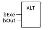

Function Block
Alters the output ‘xOut’ at the rising edge of ‘xExecute’ input.
|
Name |
Type |
Description |
|
xExecute |
BOOL |
The rising edge of it will alter the xOut. |
|
xOut |
BOOL |
Its value will be changed by the rising edge of xExecute. |
xOut is IN-OUT Type, it will be altered at the rising edge of xExecute.
myAlt is declared as an instance of ALT function block:
bExe := FALSE;
myAlt (bExe, bVar);
bExe := TRUE;
myAlt (bExe, bVar); // Var will be altered here
